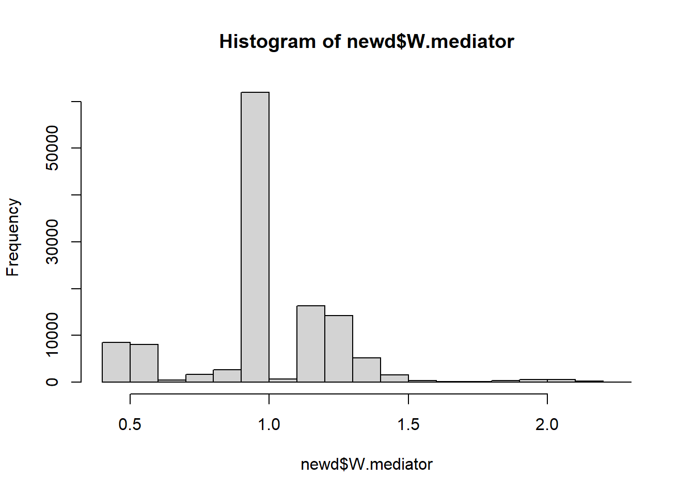
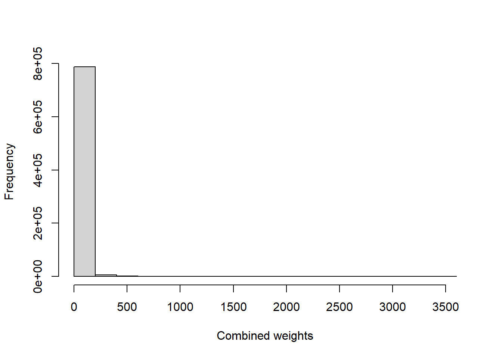
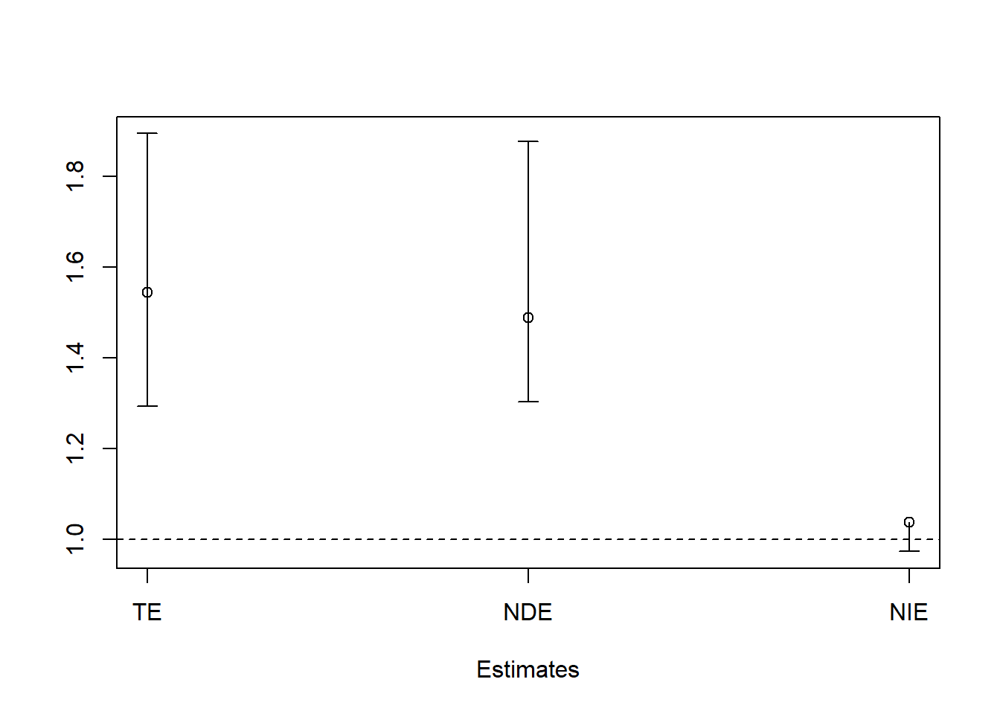

Mediation Example
We want to decompose of the “total effect” of a given exposure OA (\(A\)) on the outcome CVD (\(Y\)) into
- a natural direct effect (NDE; \(A \rightarrow Y\)) and
- a natural indirect effect (NIE) through a mediator pain medication (\(M\)) through (\(A \rightarrow M \rightarrow Y\)).
Step 0: Build data first
Show the code
load("Data/mediation/cchs123pain.RData")
source("Data/mediation/medFunc.R")
ls()
#> [1] "analytic.cc" "analytic.miss" "doEffectDecomp"
#> [4] "doEffectDecomp.int"
varlist <- c("age", "sex", "income", "race", "bmi", "edu",
"phyact", "smoke", "fruit", "diab")
analytic.miss$mediator <- ifelse(analytic.miss$painmed == "Yes", 1, 0)
analytic.miss$exposure <- ifelse(analytic.miss$OA == "OA", 1, 0)
analytic.miss$outcome <- ifelse(analytic.miss$CVD == "event", 1, 0)Pre-run step 3 model
We will utilize this fit in step 3
Show the code
# A = actual exposure (without any change)
analytic.miss$exposureTemp <- analytic.miss$exposure
w.design0 <- svydesign(id=~1, weights=~weight,
data=analytic.miss)
w.design <- subset(w.design0, miss == 0)
# Replace exposure with exposureTemp
# This will be necessary in step 3
fit.m <- svyglm(mediator ~ exposureTemp +
age + sex + income + race + bmi + edu +
phyact + smoke + fruit + diab,
design = w.design,
family = binomial("logit"))
#> Warning in eval(family$initialize): non-integer #successes in a binomial glm!
publish(fit.m)
#> Variable Units OddsRatio CI.95 p-value
#> exposureTemp 2.43 [2.06;2.86] < 1e-04
#> age 20-29 years Ref
#> 30-39 years 1.00 [0.88;1.13] 0.9442989
#> 40-49 years 0.93 [0.82;1.06] 0.2651302
#> 50-59 years 0.66 [0.58;0.76] < 1e-04
#> 60-64 years 0.61 [0.51;0.72] < 1e-04
#> 65 years and over 0.61 [0.52;0.71] < 1e-04
#> sex Female Ref
#> Male 0.50 [0.46;0.55] < 1e-04
#> income $29,999 or less Ref
#> $30,000-$49,999 1.20 [1.06;1.35] 0.0043533
#> $50,000-$79,999 1.21 [1.08;1.37] 0.0014914
#> $80,000 or more 1.28 [1.14;1.45] < 1e-04
#> race Non-white Ref
#> White 1.81 [1.62;2.02] < 1e-04
#> bmi Underweight Ref
#> healthy weight 1.09 [0.82;1.44] 0.5631582
#> Overweight 1.33 [1.01;1.77] 0.0449616
#> edu < 2ndary Ref
#> 2nd grad. 1.13 [0.98;1.30] 0.1014986
#> Other 2nd grad. 1.30 [1.08;1.55] 0.0050596
#> Post-2nd grad. 1.25 [1.10;1.42] 0.0008252
#> phyact Active Ref
#> Inactive 1.12 [1.02;1.23] 0.0184447
#> Moderate 1.12 [1.01;1.25] 0.0364592
#> smoke Never smoker Ref
#> Current smoker 1.29 [1.16;1.44] < 1e-04
#> Former smoker 1.28 [1.17;1.40] < 1e-04
#> fruit 0-3 daily serving Ref
#> 4-6 daily serving 0.92 [0.83;1.02] 0.0976967
#> 6+ daily serving 0.80 [0.71;0.90] 0.0001979
#> diab No Ref
#> Yes 1.23 [0.99;1.52] 0.0626501Step 1 and 2: Replicate data with different exposures
We manipulate and duplicate data here
Show the code
dim(analytic.miss)
#> [1] 397173 28
dim(analytic.cc)
#> [1] 28734 23
nrow(analytic.miss) - nrow(analytic.cc)
#> [1] 368439
d1 <- d2 <- analytic.miss
# Create counterfactual data
# This will be necessary in step 3
# Exposed = Exposed
d1$exposure.counterfactual <- d1$exposure
# Exposed = Not exposed
d2$exposure.counterfactual <- !d2$exposure
# duplicated data (double the amount)
newd <- rbind(d1, d2)
newd <- newd[order(newd$ID), ]
dim(newd)
#> [1] 794346 29Step 3: Compute weights for the mediation
Weight is computed by
\(W^{M|C} = \frac{P(M|A^*, C)}{P(M|A, C)}\)
in all data newd (fact d1 + alternative fact d2).
-
\(P(M|A, C)\) is computed from a logistic regression of \(M\) on \(A\) + \(C\).
- \(logit [P(M=1 | C = c]) = \beta_0 + \beta_1 a + \beta_3 c\)
-
\(P(M|A^{*}, C)\) is computed from a logistic regression of \(M\) on \(A^*\) + \(C\).
- \(logit [P(M=1 | C = c]) = \beta_0 + \beta'_1 a^* + \beta'_3 c\)
Show the code
# First, use original exposure (all A + all A):
# A = actual exposure (without any change)
# A = exposure
newd$exposureTemp <- newd$exposure
# Probability of M given A + C
w <- predict(fit.m, newdata=newd, type='response')
direct <- ifelse(newd$mediator, w, 1-w)
# Second, use counterfactual exposures (all A + all !A):
# A* = Opposite (counterfactual) values of the exposure
# A* = exposure.counterfactual
newd$exposureTemp <- newd$exposure.counterfactual
# Probability of M given A* + C
w <- predict(fit.m, newdata=newd, type='response')
indirect <- ifelse(newd$mediator, w, 1-w)
# Mediator weights
newd$W.mediator <- indirect/direct
summary(newd$W.mediator)
#> Min. 1st Qu. Median Mean 3rd Qu. Max. NA's
#> 0.4 1.0 1.0 1.0 1.2 2.2 670758
hist(newd$W.mediator)
Incorporating the survey weights:
Note: scaling can often be helpful if there exists extreme weights.
Show the code
# scale survey weights
#newd$S.w <- with(newd,(weight)/mean(weight))
newd$S.w <- with(newd,weight)
newd$S.w[is.na(newd$S.w)]
#> numeric(0)
summary(newd$S.w)
#> Min. 1st Qu. Median Mean 3rd Qu. Max.
#> 0.39 21.76 42.21 66.70 81.07 2384.98
# Multiply mediator weights with scaled survey weights
newd$SM.w <- with(newd,(W.mediator * S.w))
summary(newd$SM.w)
#> Min. 1st Qu. Median Mean 3rd Qu. Max. NA's
#> 0.4 24.7 46.4 73.9 88.8 3531.6 670758
table(newd$miss[is.na(newd$SM.w)])
#>
#> 1
#> 670758
newd$SM.w[is.na(newd$SM.w)] <- 0
summary(newd$SM.w)
#> Min. 1st Qu. Median Mean 3rd Qu. Max.
#> 0.0 0.0 0.0 11.5 0.0 3531.6
hist(newd$SM.w, main = "", xlab = "Combined weights",
ylab = "Frequency", freq = TRUE)
Here all missing weights are associated with incomplete cases (miss==1)! Hence, doesn’t matter if they are missing or other value (0) in them.
Step 4: Weighted outcome Model
Outcome model is
\(logit [P(Y_{a,M(a^*)}=1 | C = c)] = \theta_0 + \theta_1 a + \theta_2 a^* + \theta_3 c\)
after weighting (combination of mediator weight + sampling weight).
Show the code
# Outcome analysis
w.design0 <- svydesign(id=~1, weights=~SM.w,
data=newd)
w.design <- subset(w.design0, miss == 0)
# Fit Y on (A + A* + C)
fit <- svyglm(outcome ~ exposure + exposure.counterfactual +
age + sex + income + race + bmi + edu +
phyact + smoke + fruit + diab,
design = w.design,
family = binomial("logit"))
#> Warning in eval(family$initialize): non-integer #successes in a binomial glm!Point estimates
Following are the conditional ORs:
- \(OR_{TE}(C=c) = \exp(\theta_1 + \theta_2)\)
- \(OR_{NDE}(A=1,M=0,C=c) = \exp(\theta_1)\)
- \(OR_{NIE}(A^{*}=1,M=0,C=c) = \exp(\theta_2)\)
Show the code
TE <- exp(sum(coef(fit)[c('exposure', 'exposure.counterfactual')]))
TE # total effect of A-> Y + A -> M -> Y
#> [1] 1.544694
DE <- exp(unname(coef(fit)['exposure']))
DE # direct effect of A-> Y (not through M)
#> [1] 1.488554
IE <- exp(unname(coef(fit)[c('exposure.counterfactual')]))
IE # indirect effect of A-> Y (A -> M -> Y)
#> [1] 1.037714
DE * IE # Product of ORs; same as TE
#> [1] 1.544694
PM <- log(IE) / log(TE)
PM # Proportion mediated
#> [1] 0.08513902Obtaining results fast
User-written funtion doEffectDecomp() (specific to OA-CVD problem):
Confidence intervals
Standard errors and confidence intervals are determined by bootstrap methods.
Show the code
require(boot)
#> Loading required package: boot
#>
#> Attaching package: 'boot'
#> The following object is masked from 'package:survival':
#>
#> aml
# I ran the computation on a 24 core computer,
# hence set ncpus = 5 (keep some free).
# If you have more / less cores, adjust accordingly.
# Try parallel package to find how many cores you have.
# library(parallel)
# detectCores()
# doEffectDecomp is a user-written function
# See appendix for the function
set.seed(504)
bootresBin <- boot(data=analytic.miss, statistic=doEffectDecomp,
R = 5, parallel = "multicore", ncpus=5,
varlist = varlist)R = 5 is not reliable for bootstrap. In real applications, try 250 at least.
Show the code
bootci1b <- boot.ci(bootresBin,type = "perc",index=1)
#> Warning in norm.inter(t, alpha): extreme order statistics used as endpoints
bootci2b <- boot.ci(bootresBin,type = "perc",index=2)
#> Warning in norm.inter(t, alpha): extreme order statistics used as endpoints
bootci3b <- boot.ci(bootresBin,type = "perc",index=3)
#> Warning in norm.inter(t, alpha): extreme order statistics used as endpoints
bootci4b <- boot.ci(bootresBin,type = "perc",index=4)
#> Warning in norm.inter(t, alpha): extreme order statistics used as endpointsShow the code
# Number of bootstraps
bootresBin$R
#> [1] 5
# Total Effect
c(bootresBin$t0[1], bootci1b$percent[4:5])
#> TE
#> 1.544694 1.293208 1.894417
# Direct Effect
c(bootresBin$t0[2], bootci2b$percent[4:5])
#> DE
#> 1.488554 1.303554 1.876916
# Indirect Effect
c(bootresBin$t0[3], bootci3b$percent[4:5])
#> IE
#> 1.0377144 0.9738072 1.0093246
# Proportion Mediated
c(bootresBin$t0[4], bootci4b$percent[4:5])
#> PM
#> 0.08513902 -0.08360848 0.01655013The proportion mediated through pain medication was about 8.51% on the log odds ratio scale.
Visualization for main effects
Show the code
require(plotrix)
#> Loading required package: plotrix
#> Warning: package 'plotrix' was built under R version 4.3.1
TEc <- c(bootresBin$t0[1], bootci1b$percent[4:5])
DEc <- c(bootresBin$t0[2], bootci2b$percent[4:5])
IEc <- c(bootresBin$t0[3], bootci3b$percent[4:5])
mat<- rbind(TEc,DEc,IEc)
colnames(mat) <- c("Point", "2.5%", "97.5%")
mat
#> Point 2.5% 97.5%
#> TEc 1.544694 1.2932078 1.894417
#> DEc 1.488554 1.3035540 1.876916
#> IEc 1.037714 0.9738072 1.009325
plotCI(1:3, mat[,1], ui=mat[,3], li=mat[,2],
xlab = "Estimates", ylab = "", xaxt="n")
axis(1, at=1:3,labels=c("TE","NDE","NIE"))
abline(h=1, lty = 2)
Non-linearity
Consider
- non-linear relationships (polynomials) and interactions between exposure, demographic/baseline covariates and mediators,
- Is misclassification of the mediators possible?
Here we are again using a user-written funtion doEffectDecomp.int() (including interaction phyact*diab in the mediation model as well as the outcome model):
Visualization for main + interactions
R = 5 is not reliable for bootstrap. In real applications, try 250 at least.
Show the code
bootci1i <- boot.ci(bootresInt,type = "perc",index=1)
#> Warning in norm.inter(t, alpha): extreme order statistics used as endpoints
bootci2i <- boot.ci(bootresInt,type = "perc",index=2)
#> Warning in norm.inter(t, alpha): extreme order statistics used as endpoints
bootci3i <- boot.ci(bootresInt,type = "perc",index=3)
#> Warning in norm.inter(t, alpha): extreme order statistics used as endpoints
bootci4i <- boot.ci(bootresInt,type = "perc",index=4)
#> Warning in norm.inter(t, alpha): extreme order statistics used as endpointsShow the code
bootresInt$R
#> [1] 5
# from saved boostrap results: bootresInt
# (similar as before)
TEc <- c(bootresInt$t0[1], bootci1i$percent[4:5])
DEc <- c(bootresInt$t0[2], bootci2i$percent[4:5])
IEc <- c(bootresInt$t0[3], bootci3i$percent[4:5])
mat<- rbind(TEc,DEc,IEc)
colnames(mat) <- c("Point", "2.5%", "97.5%")
mat
#> Point 2.5% 97.5%
#> TEc 1.544720 1.2931358 1.893575
#> DEc 1.488689 1.3040953 1.876521
#> IEc 1.037638 0.9742042 1.009088
plotCI(1:3, mat[,1], ui=mat[,3], li=mat[,2],
xlab = "Estimates", ylab = "", xaxt="n")
axis(1, at=1:3,labels=c("TE","NDE","NIE"))
abline(h=1, lty = 2)
Appendix: OA-CVD Functions for bootstrap
These functions are written basically for performing bootstrap for the OA-CVD analysis. However, changing the covariates names/model-specifications should not be too hard, once you understand the basic steps.
Show the code
# without interactions (binary mediator)
doEffectDecomp
#> function (dat, ind = NULL, varlist)
#> {
#> if (is.null(ind))
#> ind <- 1:nrow(dat)
#> d <- dat[ind, ]
#> d$mediator <- ifelse(as.character(d$painmed) == "Yes", 1,
#> 0)
#> d$exposure <- ifelse(as.character(d$OA) == "OA", 1, 0)
#> d$outcome <- ifelse(as.character(d$CVD) == "event", 1, 0)
#> d$exposureTemp <- d$exposure
#> w.design0 <- svydesign(id = ~1, weights = ~weight, data = d)
#> w.design <- subset(w.design0, miss == 0)
#> fit.m <- svyglm(as.formula(paste0(paste0("mediator ~ exposureTemp + "),
#> paste0(varlist, collapse = "+"))), design = w.design,
#> family = quasibinomial("logit"))
#> d1 <- d2 <- d
#> d1$exposure.counterfactual <- d1$exposure
#> d2$exposure.counterfactual <- !d2$exposure
#> newd <- rbind(d1, d2)
#> newd <- newd[order(newd$ID), ]
#> newd$exposureTemp <- newd$exposure
#> w <- predict(fit.m, newdata = newd, type = "response")
#> direct <- ifelse(newd$mediator, w, 1 - w)
#> newd$exposureTemp <- newd$exposure.counterfactual
#> w <- predict(fit.m, newdata = newd, type = "response")
#> indirect <- ifelse(newd$mediator, w, 1 - w)
#> newd$W.mediator <- indirect/direct
#> summary(newd$W.mediator)
#> newd$S.w <- with(newd, weight)
#> summary(newd$S.w)
#> newd$SM.w <- with(newd, (W.mediator * S.w))
#> newd$SM.w[is.na(newd$SM.w)] <- 0
#> summary(newd$SM.w)
#> w.design0 <- svydesign(id = ~1, weights = ~SM.w, data = newd)
#> w.design <- subset(w.design0, miss == 0)
#> fit <- svyglm(as.formula(paste0(paste0("outcome ~ exposure + exposure.counterfactual +"),
#> paste0(varlist, collapse = "+"))), design = w.design,
#> family = quasibinomial("logit"))
#> TE <- exp(sum(coef(fit)[c("exposure", "exposure.counterfactual")]))
#> DE <- exp(unname(coef(fit)["exposure"]))
#> IE <- exp(unname(coef(fit)[c("exposure.counterfactual")]))
#> PM <- log(IE)/log(TE)
#> return(c(TE = TE, DE = DE, IE = IE, PM = PM))
#> }
#> <bytecode: 0x000001b81bd56400>
# with interactions (binary mediator)
doEffectDecomp.int
#> function (dat, ind = NULL, varlist)
#> {
#> if (is.null(ind))
#> ind <- 1:nrow(dat)
#> d <- dat[ind, ]
#> d$exposureTemp <- d$exposure
#> w.design0 <- svydesign(id = ~1, weights = ~weight, data = d)
#> w.design <- subset(w.design0, miss == 0)
#> fit.m <- svyglm(as.formula(paste0(paste0("mediator ~ exposureTemp + phyact*diab +"),
#> paste0(varlist, collapse = "+"))), design = w.design,
#> family = quasibinomial("logit"))
#> d1 <- d2 <- d
#> d1$exposure.counterfactual <- d1$exposure
#> d2$exposure.counterfactual <- !d2$exposure
#> newd <- rbind(d1, d2)
#> newd <- newd[order(newd$ID), ]
#> newd$exposureTemp <- newd$exposure
#> w <- predict(fit.m, newdata = newd, type = "response")
#> direct <- ifelse(newd$mediator, w, 1 - w)
#> newd$exposureTemp <- newd$exposure.counterfactual
#> w <- predict(fit.m, newdata = newd, type = "response")
#> indirect <- ifelse(newd$mediator, w, 1 - w)
#> newd$W.mediator <- indirect/direct
#> summary(newd$W.mediator)
#> newd$S.w <- with(newd, weight)
#> summary(newd$S.w)
#> newd$SM.w <- with(newd, (W.mediator * S.w))
#> newd$SM.w[is.na(newd$SM.w)] <- 0
#> summary(newd$SM.w)
#> w.design0 <- svydesign(id = ~1, weights = ~SM.w, data = newd)
#> w.design <- subset(w.design0, miss == 0)
#> fit <- svyglm(as.formula(paste0(paste0("outcome ~ exposure + exposure.counterfactual +"),
#> paste0(varlist, collapse = "+"))), design = w.design,
#> family = quasibinomial("logit"))
#> TE <- exp(sum(coef(fit)[c("exposure", "exposure.counterfactual")]))
#> DE <- exp(unname(coef(fit)["exposure"]))
#> IE <- exp(unname(coef(fit)[c("exposure.counterfactual")]))
#> PM <- log(IE)/log(TE)
#> return(c(TE = TE, DE = DE, IE = IE, PM = PM))
#> }
#> <bytecode: 0x000001b8137777a0>Video content (optional)
For those who prefer a video walkthrough, feel free to watch the video below, which offers a description of an earlier version of the above content.